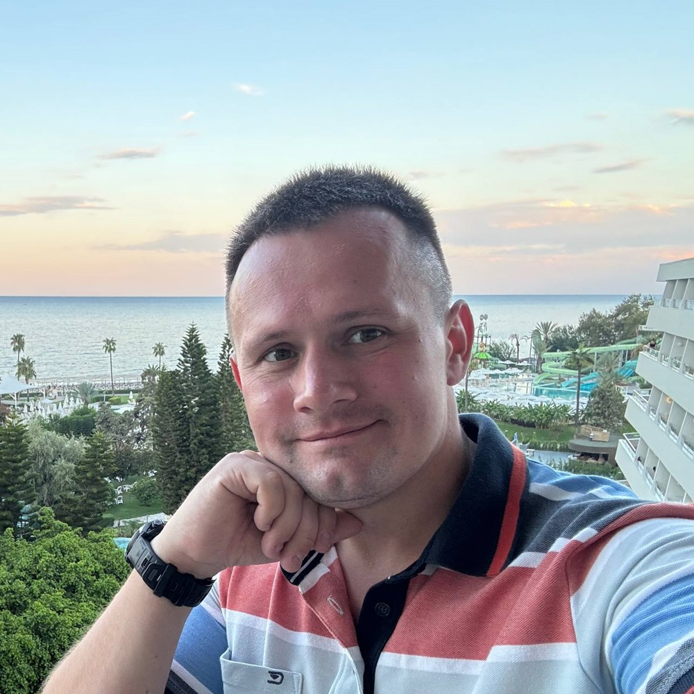
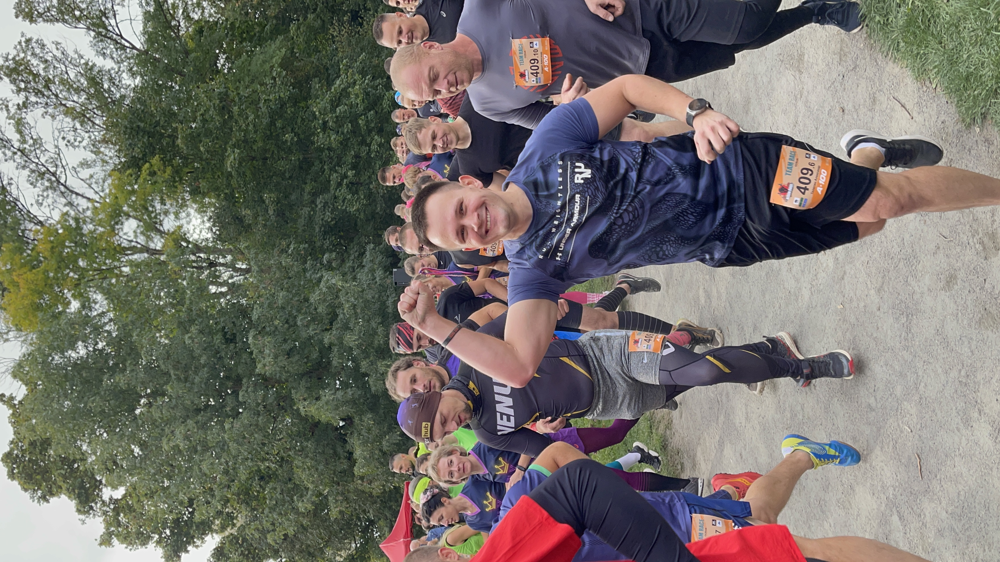
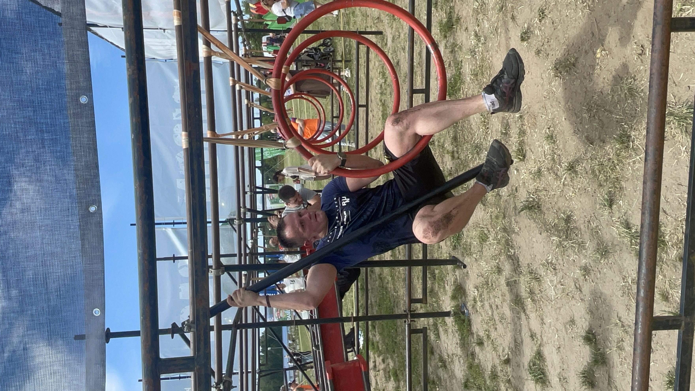
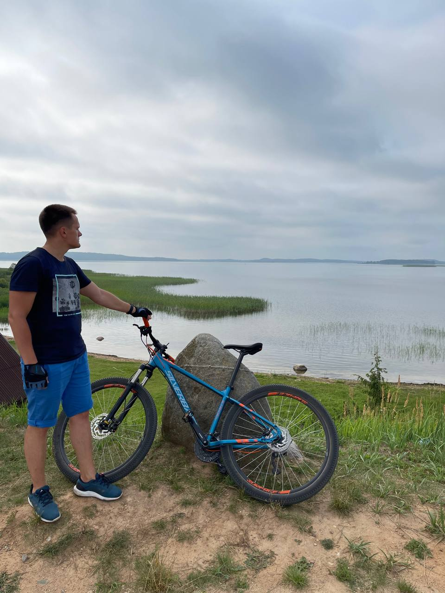
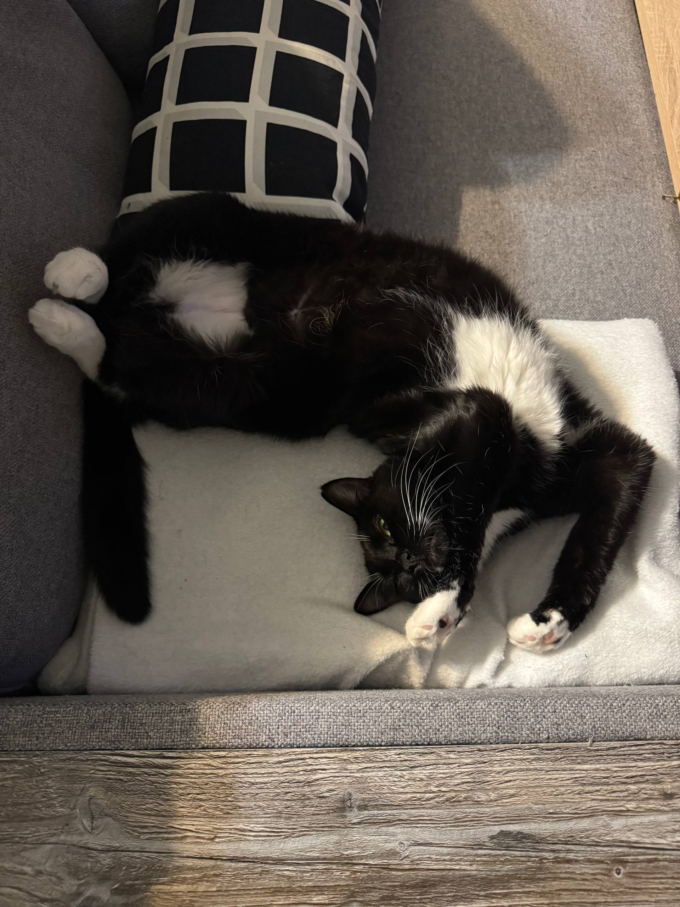
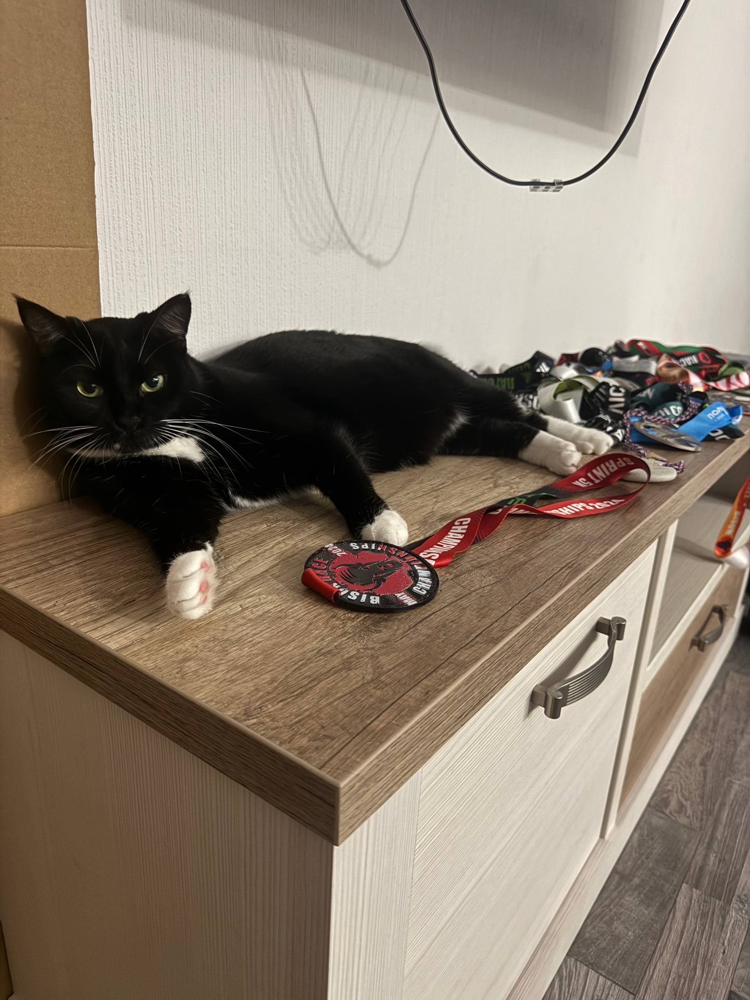

Занимаюсь продажами и маркетингом в сегменте B2B. Сейчас начинаю свой небольшой бизнес в сфере обработки дерева и металла.

Позвольте представиться: меня зовут Александр Телегин. Родился и живу в Минске. Занимаюсь развитием своего дела, ранее работал в промышленных компаниях в сфере маркетинга и продаж.
Умею работать как с цифрами, так и с людьми. Привык разбираться в цифрах и рынке: делал маркетинговые исследования, анализировал конкурентов, считал цены. Умею работать в команде и руководить ею. С новыми людьми обычно быстро нахожу общий язык.
Я всегда стремлюсь узнавать что-то новое, в том числе в областях, далёких от моей основной. Поэтому и после университета продолжал учиться: проходил курсы по маркетингу и бизнес-анализу, а теперь осваиваю новую для себя сферу нейросетей.
Сейчас я начинаю свой небольшой бизнес в сфере обработки дерева и металла. Это новое для меня дело, но с понятной базой: много лет я проработал в промышленных B2B-компаниях.
Долго продавал и продвигал чужую продукцию, и захотелось сделать что-то своё. Сейчас я на старте: прорабатываю идею, считаю экономику и ищу первых клиентов.
Хочу делать хороший продукт и оставаться честным партнёром.
Решаю, что именно делать и для кого, чтобы это было нужно людям.
Изучаю рынок так же, как делал это на работе.
Считаю себестоимость и выбираю цену, чтобы бизнес приносил прибыль.
Ищу, веду переговоры, показываю, что предлагаю.
Небольшое досье. Работа работой, но жизнь у меня не ограничивается переговорами и таблицами.




